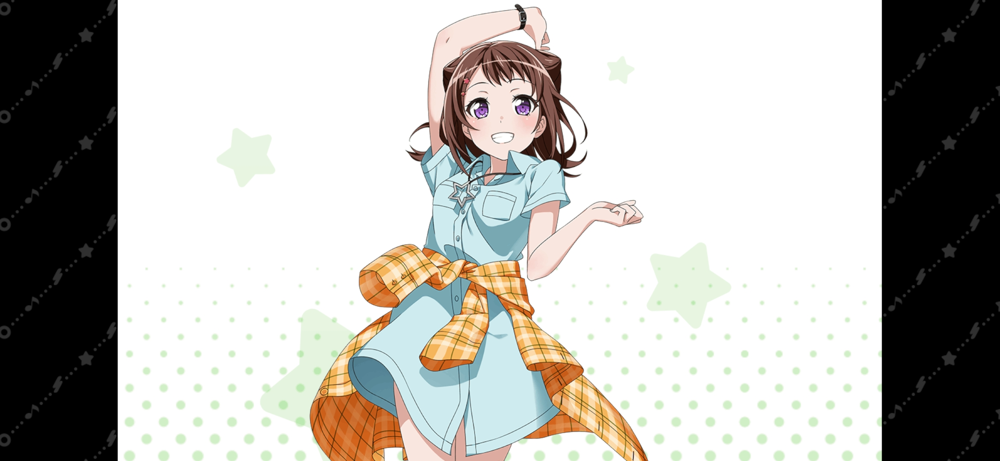
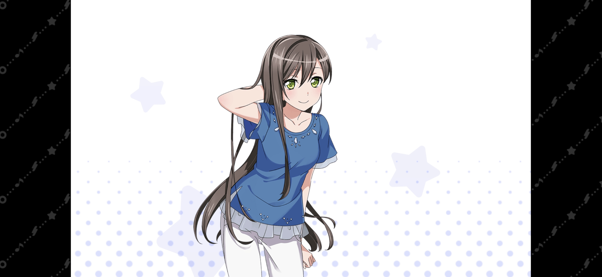
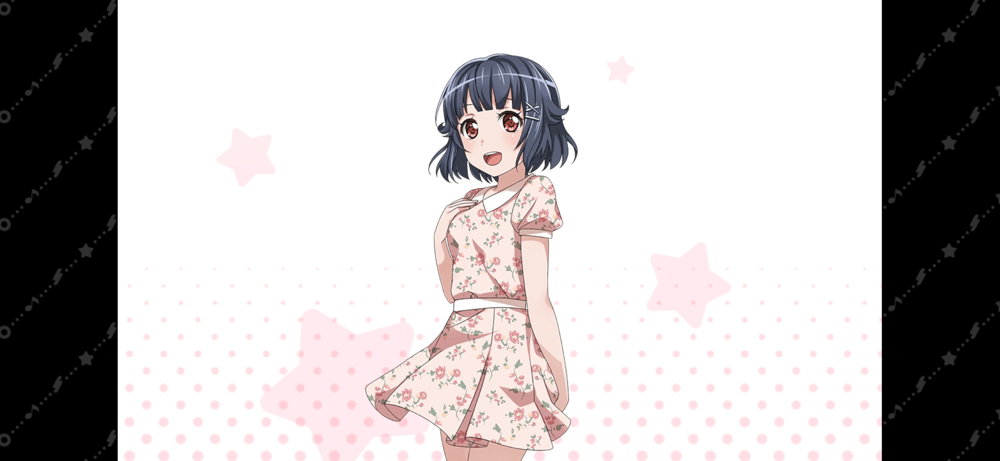
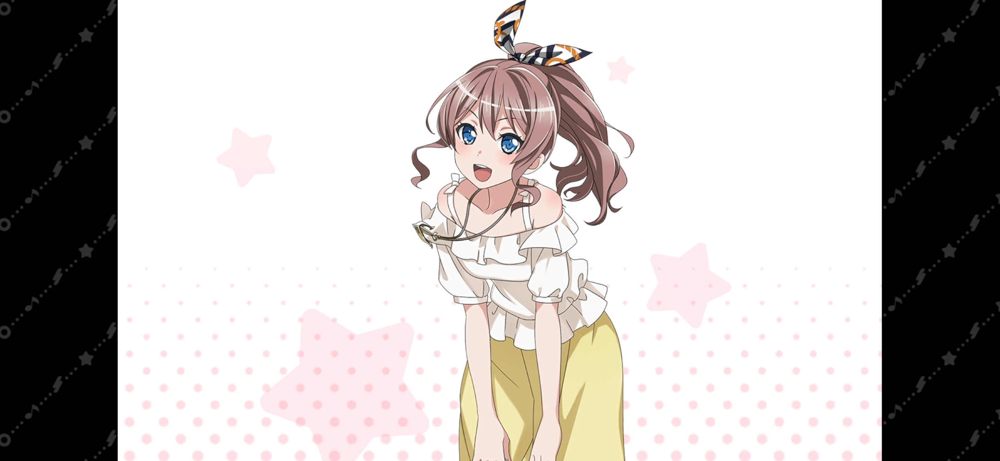
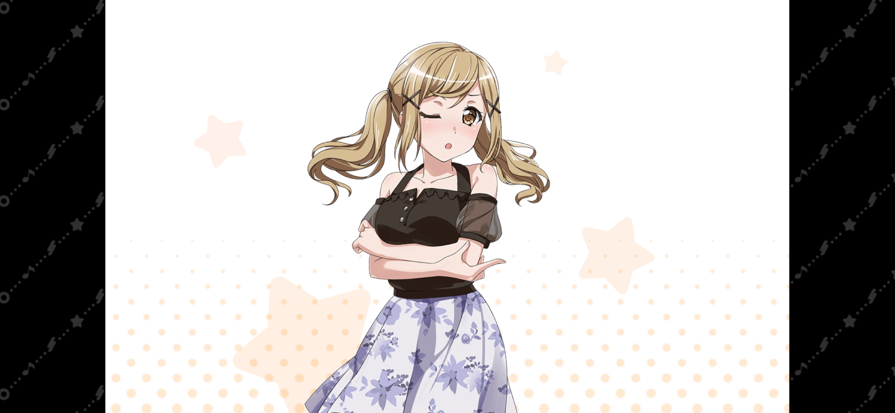

| 圖片 | 姓名 | 擔當 | 聲優 | 生日 | 身高 | 簡介 |
|---|---|---|---|---|---|---|
|  | 戶山香澄 | 主唱兼吉他手 | 愛美 | 7月14日 | 156cm | Poppin'Party樂隊的主唱兼吉他手。 喜歡冒險和唱卡拉OK。 喜歡的食物是炸薯條、白米飯，討厭納豆。 就讀於花咲川女子學園。 有著積極樂觀的性格。做事衝動莽撞，常有令人詫異的舉動。 |
|  | 花園多惠 | 主音吉他手 | 大塚紗英 | 12月4日 | 164cm | Poppin'Party樂隊的主音吉他手，就讀花咲川女子學園。 興趣是跑步、黏土、泡澡。 喜歡的食物是漢堡肉、年糕紅豆粥、能吃的都喜歡，討厭的食物好像是沒有。 小學就開始學習吉他的實力派。 性格我行我素而又天然，時不時會做出意料之外的行動讓周圍的人吃驚。 想法很直率，但是一個十分冷靜面對牙醫除外、很清楚知道為了別人該怎麼做的孩子。 |
|  | 牛込里美 | 貝斯手 | 西本里美 | 3月23日 | 150cm | Poppin'Party樂隊的貝斯手，就讀於花咲川女子學園。 興趣是遊戲和讀書，還有攝影的專長，平常會紀錄樂團的日常。 喜歡的食物是巧克力螺、肉、鮮奶油，討厭的食物為薄荷味巧克力。 關西人，性格比較膽小怯懦，一緊張就容易說出方言，比較認生所以起初一直自己一人在屋頂吃午餐。 姐姐牛込百合是Glitter☆Green樂隊的主唱，使用的粉色ESP貝斯也是她送的。 |
|  | 山吹沙綾 | 鼓手 | 大橋彩香 | 5月19日 | 151cm | Poppin'Party樂隊的鼓手。興趣是卡拉OK、觀看棒球賽、收集髮飾。 喜歡的食物是奶酪，討厭生海鮮。 就讀花咲川女子學園。 開學典禮就和香澄交好，經常和香澄一起吃飯。 性格溫柔，為朋友著想，是香澄的諮詢對象。 一邊讀高中一邊在自家的麵包店「山吹烘焙坊」（やまぶきベーカリー）幫忙，是個孝順的少女。 |
|  | 市谷有咲 | 鍵盤手 | 伊藤彩沙 | 10月27日 | 152cm | Poppin'Party樂隊的鍵盤手，就讀花咲川女子學園。 喜歡的食物有豆沙水果涼粉、玄米、白煮蛋，討厭蔥類的食物。 以盆景和上網為興趣的室內派。 雖然基本一直不出門，但很有方法所以在學校成績優秀。 非常毒舌，特別是總對香澄很強硬，但其實只是坦率不起來而已。 |